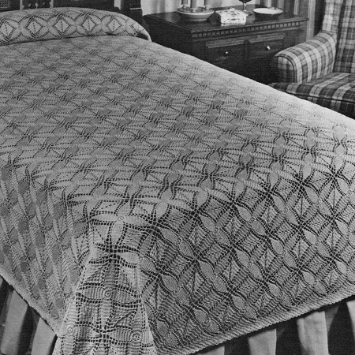
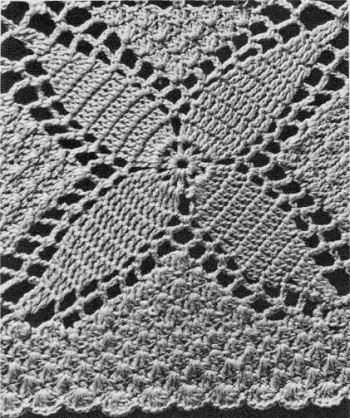

Loosestripe Leaves Bedspread pattern
Whether you're a nature enthusiast, a lover of leaves, or simply appreciate the beauty of the outdoors, the crochet Loosestripe Leaves bedspread will transform your bedroom into a haven of serenity and natural wonder. It is a testament to the artistry of crochet and the captivating beauty of nature's delicate designs.
MATERIALS:
J. & P. COATS "KNIT-CRO-SHEEN," Art. A.64:
Single Size Spread-67 1/2 x 108 inches, excluding border: 62 balls of No. 1 White, No. 61 Ecru or No. 42 Cream; or 88 balls of any color.
Double Size Spread-85 1/2 x 108 inches, excluding border: 79 balls of No. 1 White, No. 61 Ecru or No. 42 Cream; or 111 balls of any color.
Milwards Steel Crochet Hook No. 7.
Each Motif measures 4 1/2 inches square.
FIRST MOTIF: Starting at center, ch 6. Join with sl st to form ring.
1st Rnd: Ch 4, in ring make (dc, ch 1) 11 times. Join to 3rd ch of ch-4.
2nd Rnd: In first sp make sl st, ch 3 and 2 dc; (3 dc in next ch-1 sp) twice; * ch 3, (3 dc in next sp) 3 times. Repeat from * around, ending with ch 3. Join to top of first ch-3.
3rd Rnd: Ch 3, skip joining, dc in next 8 dc, * ch 3, sc in next loop, ch 3, dc in next 9 dc. Repeat from * around, ending with ch 3. Join as before.
4th Rnd: Ch 3, skip joining, dc in next 8 dc, * ch 3, sc in next loop, ch 5, sc in next loop, ch 3, dc in next 9 dc. Repeat from * around, ending with ch 3. Join.
5th Rnd: Ch 3, skip joining, dc in next 8 dc, * ch 3, (sc in next loop, ch 5) twice; sc in next loop, ch 3, dc in next 9 dc. Repeat from * around, ending with ch 3. Join.
6th Rnd: Ch 3, skip joining, dc in next 8 dc, * ch 3, sc in next loop, ch 5, sc in next loop, 3 dc in next sc - shell made; sc in next loop, ch 5, sc in next loop, ch 3, dc in next 9 dc. Repeat from * around, ending with ch 3. Join.
7th Rnd: Ch 3, skip joining, dc in next 6 dc, * holding back on hook the last loop of each dc, dc in next 2 dc, thread over and draw through all 3 loops on hook-1 dc decreased; (ch 5, sc in next loop) twice; shell in next sc, sc in center dc of next shell, shell in next sc, (sc in next loop, ch 5) twice; dec 1 dc over next 2 dc, dc in next 5 dc. Repeat from * around, ending with ch 5. Join to first dc.
8th Rnd: Ch 3, skip joining, dc in next 4 dc, * dec 1 dc over next 2 dc, (ch 5, sc in next loop) twice; (shell in next sc, sc in center dc of next shell) twice; shell in next sc, (sc in next loop, ch 5) twice; dec 1 dc over next 2 dc, dc in next 3 dc. Repeat from * around, ending with ch 5. Join to first dc.
9th Rnd: Ch 3, skip joining, dc in next 2 dc, * dec 1 dc over next 2 dc, (ch 5, sc in next loop) twice; (shell in next sc, sc in center dc of next shell) 3 times; shell in next sc, (sc in next loop, ch 5) twice; dec 1 dc over next 2 dc, dc in next dc. Repeat from * around, ending with ch 5. Join to first dc.
10th Rnd: Ch 4, skip joining, holding back on hook the last loop of each tr, tr in next 2 dc, thread over and draw through all 3 loops on hook-2-tr cluster made; ch 7 for corner loop, sl st in tip of cluster just made, * (ch 7 sc in next loop) twice; shell in next sc, (sc in center dc of next shell, shell in next sc) 4 times; (sc in next loop, ch 7) twice; holding back on hook the last loop of each tr, tr in next 3 dc, thread over and draw through all loops on hook-3-tr cluster made; ch 7 corner loop, sl st in tip of cluster just made. Repeat from * around, end-ing with ch 7. Join to tip of first cluster. Break off and fasten.
SECOND MOTIF:
Work exactly as for First Motif until the 9th rnd has been completed.
10th Rnd: Ch 4, 2-tr cluster over next 2 dc, ch 3; now join 2 motifs along one side as follows: Sl st in any corner loop on First Motif, ch 3, sl st in tip of cluster just made on Second Motif, (ch 3, sl st in next loop on First Motif, ch 3, sc in next loop on Second Motif) twice; (2 dc in next sc on Second Motif, sl st in center dc of next shell on First Motif, complete the shell in work on Second Motif, sc in center dc of next shell on Second Motif) 4 times; 2 dc in next sc on Second Motif, sl st in center dc of next shell on First Motif, complete the shell in work on Second Motif, (sc in next loop on Second Motif, ch 3, sl st in next loop on First Motif, ch 3) twice; 3-tr cluster over next 3 dc on Second Motif, ch 3, sl st in next corner loop on First Motif, ch 3, sl st in tip of cluster just made on Second Motif; working on Second Motif only and starting at * on 10th rnd of First Motif, complete Second Motif exactly as for First Motif (no more joinings).
For Single Size Spread make 15 x 24 motifs; or for Double Size Spread make 19 x 24 motifs, joining motifs as Second Motif was joined to First Motif (where 4 corners meet, join corners to previous joinings).
BORDER 1st Rnd: Attach thread to the center dc of the shell preceding any corner, sc in same place, shell in next sc, * sc in next loop, shell in next sc, sc in next loop, shell in tip of corner cluster, sc in corner loop, shell in sl st of corner loop - corner group made; (sc in next loop, shell in next sc) twice; (sc in center dc of next shell, shell in next sc) 5 times; ** sc in next loop, shell in next sc, sc in next loop, shell in tip of next cluster, sc in the joining between motifs, shell in tip of next cluster on next motif, (sc in next loop, shell in next sc) twice; (sc in center dc of next shell, shell in next sc) 5 times. Repeat from ** across to within the first ch-7 loop following the last shell of last motif preceding next corner. Repeat from * around, ending with a shell. Join to first sc.
2nd Rnd: Ch 3, dc in joining, (sc in center dc of next shell, shell in next sc) twice; sc in center dc of next shell, * in corner sc make shell, ch 3 and shell; ** sc in center dc of next shell, shell in next sc. Repeat from ** across to within the first shell of next corner group, sc in center dc of next shell. Repeat from * around, ending with dc in same sc where first dc was made. Join to top of ch-3.
3rd Rnd: Ch 1, sc in joining, (shell in next sc, sc in center dc of next shell) 3 times; * in corner sp make shell, ch 3 and shell; ** sc in center dc of next shell, shell in next sc. Repeat from ** across to within the shell preceding next corner sp, sc in center dc of next shell. Repeat from * around, ending with shell in last sc. Join to first sc.
4th Rnd: Ch 3, dc in joining, (sc in center dc of next shell, shell in next sc) 3 times; sc in center dc of next shell. Repeat from * on 3rd rnd, ending with dc in same place where first dc was made. Join.
5th Rnd: Work as for 3rd rnd, repeating directions given in parentheses 4 times instead of 3 times.
6th Rnd: Work as for 4th rnd, repeating the directions given in parentheses 4 times instead of 3 times.
7th Rnd: Ch 1, sl st in joining, (5-dc shell in next sc, sl st in center dc of next shell) 5 times; * in corner sp make 5-dc shell, ch 3 and 5-dc shell; ** sl st in center dc of next shell, 5-dc shell in next sc. Repeat from ** across to within the shell preceding next corner sp, sl st in center dc of next shell. Repeat from * around, ending with 5-dc shell in last sc. Join to first sl st. Break off and fasten. Block to measurements.

HOME